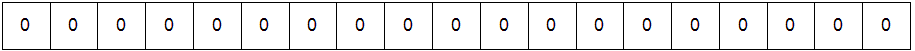
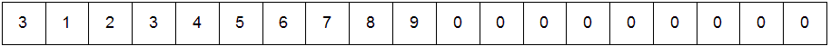
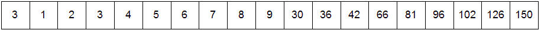
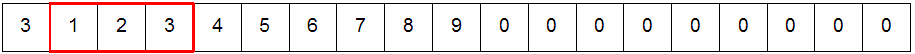
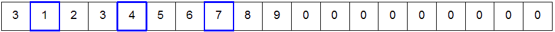
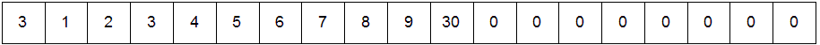
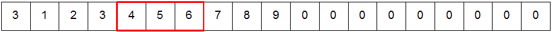
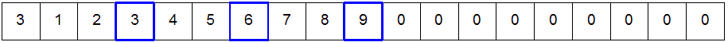
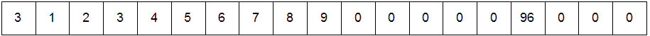

Information
Information on Feature test macros (shown highlighted above.) More discussion here.gcc -D_XOPEN_SOURCE -Werror -Wall -Wextra -std=c11 -pedantic -g -O -Wno-unused-result parent-matrix.c -o parent-matrix gcc -D_XOPEN_SOURCE -Werror -Wall -Wextra -std=c11 -pedantic -g -O -Wno-unused-result child-matrix.c -o child-matrix clang -D_XOPEN_SOURCE -Werror -Wall -Wextra -std=c11 -pedantic -g -O -Wno-unused-result parent-matrix.c -o parent-matrix clang -D_XOPEN_SOURCE -Werror -Wall -Wextra -std=c11 -pedantic -g -O -Wno-unused-result child-matrix.c -o child-matrix
As always, creating a makefile will improve your productivity during development.
where the first parameter is the name of a text file that has the matrix in it and the second parameter is the name of the child program to execute../parent-matrix input.txt child-matrix
DO NOT assume that the name of the child matrix executable is child-matrix. This is provided to the parent on the command line and you will use that name. Hard-coding this value will cause your program to fail and you will lose significant points for that.
1 2 3
4 5 6
7 8 9
30 36 42
66 81 96
102 126 150
and you would see something like this:./gen_matrix 5 -20 20
5
16 14 16 12 15
8 8 -16 -19 -6
-17 -2 20 11 5
-15 -6 -10 5 19
16 -4 16 10 5
./gen_matrix 5 -20 20 > mat5.txt
16 14 16 12 15
8 8 -16 -19 -6
-17 -2 20 11 5
-15 -6 -10 5 19
16 -4 16 10 5
156 172 472 312 539
653 346 -226 -387 -399
-713 -380 130 159 91
111 -344 -90 39 -49
-118 80 620 544 559
You need to capture your shell session that shows compiling and running the program, using diff to make sure your output is correct and running with valgrind and then running Doxygen. After you've finished coding and testing everything and are sure everything is correct, use the script command to make a text file of your session. From the bash shell in the directory you've setup to test with, run these commands: (You'll need a proper Doxygen config file called Doxyfile for the doxygen command to work. Make sure to enable warnings and set output to QUIET. Otherwise, you will have lots of unecessary output and will not be able to see the warnings.)
Then, press Ctrl-D to end the script session. A file named typescript was created with all of the commands and output. Replace FIRSTNAME and LASTNAME with your real first name and last name. This is how you get your name in the typescript file. Consult the man pages if you want more information on script.script date uptime echo FIRSTNAME LASTNAME pwd whoami uname -a cat /proc/cpuinfo cat /proc/meminfo gcc -D_XOPEN_SOURCE -Werror -Wall -Wextra -std=c11 -pedantic -O -Wno-unused-result parent-matrix.c -o parent-matrix gcc -D_XOPEN_SOURCE -Werror -Wall -Wextra -std=c11 -pedantic -O -Wno-unused-result child-matrix.c -o child-matrix clang -D_XOPEN_SOURCE -Werror -Wall -Wextra -std=c11 -pedantic -O -Wno-unused-result parent-matrix.c -o parent-matrix clang -D_XOPEN_SOURCE -Werror -Wall -Wextra -std=c11 -pedantic -O -Wno-unused-result child-matrix.c -o child-matrix ./parent-matrix mat16.txt child-matrix | tee output.txt diff output16.txt output.txt valgrind -q --leak-check=full --show-reachable=yes --trace-children=yes --tool=memcheck ./parent-matrix mat5.txt ./child-matrix doxygen cd latex make cd .. ls -al latex/
Additional information
Squaring this:
Results in this:1 2 3 4 5 6 7 8 9
Aftering the parent creates the shared memory:30 36 42 66 81 96 102 126 150
After the parent puts the width and input values into the shared memory:
Aftering each child process has written its result to the shared memory
This is the how the first child calculates the value:
Row 0:
Column 0:
Writes to first integer in the result matrix:
This is how the 6th child calculates the value:
Row 1:
Column 2:
Writes to 6th integer in the result matrix:
